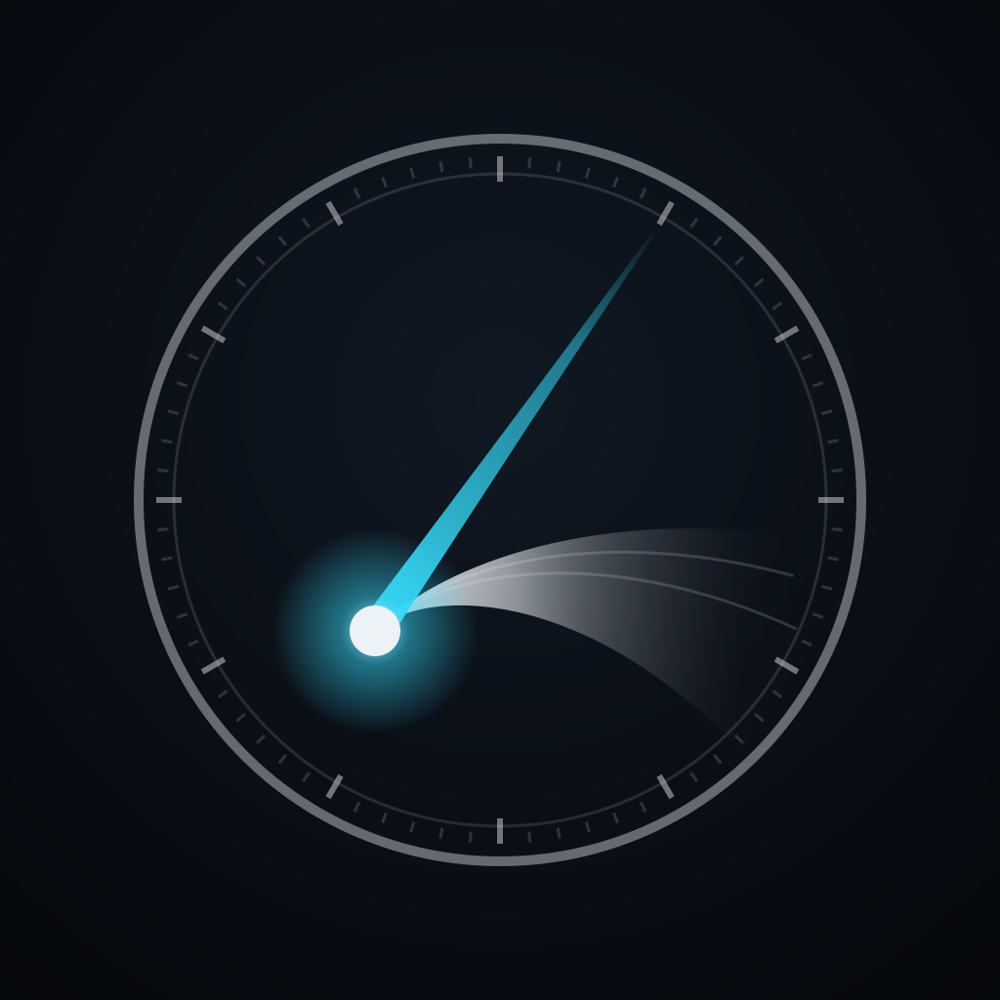

Cometarium は、彗星がいつ・どこに見え、どんな尾を引くのかを、実測にもとづく 軌道計算と物理モデルで描く天文アプリです(iPhone / iPad / Mac)。星表の上に彗星の 通り道を引き、その日の位置に太陽風とダストのモデルから計算した尾を添えます。 無料版は 10P/Tempel 2 を収録しています。完全にオフラインで動作します。
Cometarium shows where a comet is, when it is visible and how its tails lie on the sky, all from real orbit integration and dust/plasma physics — for iPhone, iPad and Mac. The free edition covers comet 10P/Tempel 2 and works fully offline.
| 項目 / Item | 内容 / What |
|---|---|
| 対象彗星 / Comet | 10P/Tempel 2 |
| 画面 / Panels | 天球・地平・観測・太陽系・光度・尾・詳細 |
| 太陽系の比較軌道 / Comparison orbit | 220P/McNaught |
| 計算 / Computation | すべて端末内。通信も登録も不要 / on the device, no network, no account |
avellsky@gmail.com